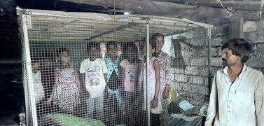
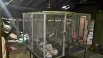

Estimated Read Time: minutes
Human-Wildlife Conflict in Gujarat (Case Study: Amreli District)
This case study from Amreli District highlights the acute challenges faced by rural communities living in close proximity to wildlife habitats, forcing them to adopt desperate measures for survival.
Location & Context
- Village: Japodar, Amreli district, Gujarat
- Affected Individual: Bharatbhai Baraiya, 30-year-old widowed tenant farmer
- Proximity to Wildlife Area: Close to Gir National Park, a vital habitat for Asiatic lions and leopards
Issue at Hand: Human-Wildlife Conflict
- Main Threat: Leopards (Panthera pardus) - known for their stealth and unpredictable nature.
- Nature of Threat:
- Attack silently, mainly targeting children and small animals.
- More unpredictable and stealthy compared to lions.
- Instances Noted by Bharatbhai:
- Daily leopard sightings on a banyan tree near his home.
- Disturbing disappearance of his puppies on the farm.
- His daughter's traumatic encounter with a leopard, causing psychological distress.

Leopards are highly adaptable and often venture into human settlements, especially with habitat fragmentation.
Desperate Measures for Protection
- Human Cage Built: A stark symbol of desperation and grassroots innovation.
- Size: 8x6 feet.
- Materials: Constructed from iron rods, grilles, tarpaulin sheets, and cement blocks.
- Cost: ₹9,000 (a significant sum for a tenant farmer).
- Purpose: To protect his 5 young daughters from potential leopard attacks at night.
- This act underscores the severe lack of adequate state intervention and safety nets.

The makeshift cage highlights the vulnerability and resilience of families in conflict zones.
Leopard Population Trends
- 2023 Wildlife Census Data (Gujarat):
- Total leopards in the state: A significant 2,274.
- In Amreli District: A notable increase:
- 2016: 105
- 2023: 126 (and likely increased further since the census)
- Implication: The growing leopard population directly increases the likelihood of human-wildlife conflict, particularly in agrarian and rural fringe areas adjacent to forests.
Socio-Economic Aspects
- Occupation: Bharatbhai is a tenant farmer, often working late nights for irrigation duties, leaving his family vulnerable.
- Housing Conditions:
- His home is poorly constructed, resembling a cattle shed.
- Lacks proper doors or a solid foundation, making it highly vulnerable to animal intrusion.
- Family Background: A poignant story of resilience.
- He became a widower in November 2023, his wife having passed away during childbirth.
- His infant son lives with maternal grandparents.
- He is courageously raising five daughters alone, under the constant shadow of wildlife threats.
Relevant Themes for UPSC CSE
- GS Paper 1: Society
- Rural distress and livelihood challenges.
- Gender and child vulnerability in marginalized communities.
- The unique struggles of single parenthood in agrarian settings.
- GS Paper 3: Environment & Ecology
- In-depth analysis of human-wildlife conflict dynamics.
- The delicate balance between conservation efforts and livelihood challenges.
- Understanding the carrying capacity of ecosystems and its implications.
- Impacts of wildlife population growth on human settlements.
- Essay Paper: Potential topics include:
- "Living with Nature: Harmony or Conflict?"
- "Survival, Innovation, and Dignity in Rural India"
- "The Unseen Burdens of Conservation on Local Communities"
Way Forward & Policy Implications
- Integrated Wildlife Management Plans: Essential for long-term solutions, including safe corridors, robust habitat protection, and effective fencing solutions.
- Compensation and Insurance Schemes: Timely and adequate financial support for affected families to mitigate losses from crop damage, livestock predation, and human injury/loss of life.
- Awareness & Education: Promoting co-existence strategies and safe practices among local communities.
- State Intervention: Crucial for improving rural housing infrastructure and providing safe night shelters for vulnerable populations.
- Technology Use: Deployment of motion-sensor alarms, solar fencing, and drone surveillance for early warning and monitoring.
Keywords for Mains Answers / Essay
Human-wildlife interface, Ecological balance vs. livelihood, Vulnerable communities, Informal housing, Biodiversity pressure zones, Rural resilience, Grassroots innovation, Conservation ethics, Sustainable co-existence.